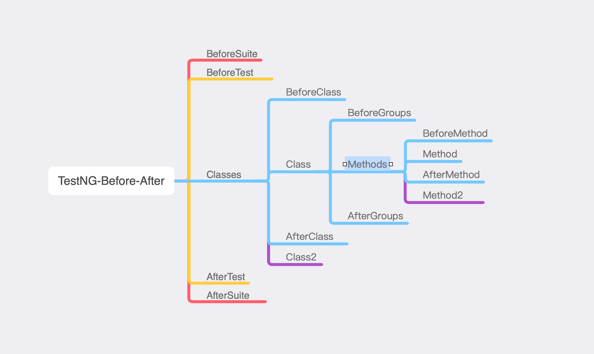

1. TestNG是什么
TestNG一种开源自动测试框架, 相当灵活的注解和配置, 自由测试.
2. Before After执行顺序

| 注解 | 描述 |
|---|---|
| @BeforeSuite | 套件, 在所有测试开始时运行1次 |
| @BeforeTest | 在所有类Classes前, BeforeSuite后运行1次,注解的方法将在testNG.xml文件test标签内的所有类方法运行前执行 |
| @BeforeClass | 在单个class类前执行1次 |
| @BeforeGroups | 在所有配置方法组前运行1次 |
| @BeforeMethod | 在单个配置方法前运行 |
| @AfterMethod | 在单个配置方法后运行 |
| @AfterGroups | 在所有配置方法组后运行1次 |
| @AfterClass | 在单个class类后执行1次 |
| @AfterTest | 在所有类Classes后, AfterSuite前运行1次, 注解的方法将在testNG.xml文件test标签内的所有类方法运行后执行。 |
| @AfterSuite | 套件, 在所有测试结束时运行1次 |
package com.actiger.test.suite;
import org.testng.annotations.*;
public class LoginTest {
@Test(groups = {"group"})
public void loginTest(){
System.out.println("Login test");
}
@Test(groups = {"group"})
public void cc(){
System.out.println("See you ");
}
@BeforeTest(groups = {"group"})
public void beforeTestGroup(){
System.out.println("Before Test");
}
@AfterTest(groups = {"group"})
public void afterTestGroup() {
System.out.println("After Test");
}
@BeforeMethod(groups = {"group"})
public void beforeMethod(){
System.out.println("before Method");
}
@AfterMethod(groups = {"group"})
public void afterMethod(){
System.out.println("after Method");
}
@BeforeClass(groups = {"group"})
public void beforeClass(){
System.out.println("Before Class");
}
@AfterClass(groups = {"group"})
public void afterClass(){
System.out.println("After Class");
}
@BeforeGroups(groups = {"group"})
public void beforeGroup(){
System.out.println("Before Group");
}
@AfterGroups(groups = {"group"})
public void afterGroup(){
System.out.println("After Group");
}
@BeforeSuite(groups = {"group"})
public void beforeSuite(){
System.out.println("before suite!");
}
@AfterSuite(groups = {"group"})
public void afterSuite(){
System.out.println("after suite");
}
}
xml注解, test.xml
<?xml version="1.0" encoding="UTF-8" ?>
<!DOCTYPE suite SYSTEM "http://testng.org/testng-1.0.dtd" >
<suite name="suite">
<test name="loginTest">
<groups>
<run>
<include name="group"></include>
</run>
</groups>
<classes>
<class name="com.actiger.test.suite.LoginTest" ></class>
</classes>
</test>
</suite>
3. 添加group标签
在注释后添加组, 这个注释是运行在这个组下
@BeforeTest(groups = {"group"})